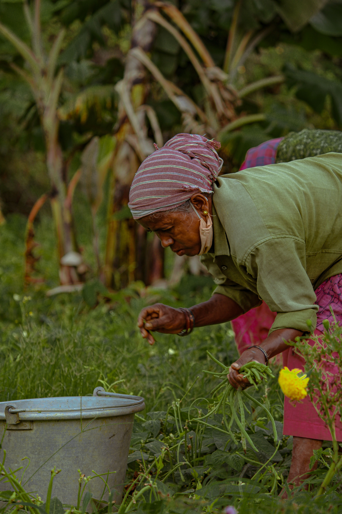
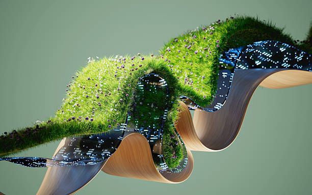

How Precision Farming is Reshaping Indian Agriculture
Data-driven farming techniques are helping Indian farmers increase yield by up to 60% while reducing input costs significantly.
Read Article →Expert articles, how-to guides, and the latest in agricultural technology — written for farmers, by farmers and scientists.
India's farming sector is undergoing a quiet revolution. From GPS-guided tractors in Punjab to AI-powered crop stress detection in Tamil Nadu, precision agriculture is no longer a future dream — it's happening now.
In this in-depth article, Dr. Anand Krishnan explores how these technologies are accessible even to smallholder farmers, and what you need to get started with a budget under ₹50,000.
Read Full Article →Data-driven farming techniques are helping Indian farmers increase yield by up to 60% while reducing input costs significantly.
Read Article →How multispectral imaging detects crop diseases and nutrient deficiencies weeks before visible symptoms appear.
Read Article →
OrganicA practical season-by-season roadmap for switching to organic farming with real cost and profit benchmarks.
Read Article →
WaterA detailed side-by-side comparison of irrigation methods with cost estimates for Tamil Nadu's major crops.
Read Article →Farmer Producer Organisations are helping smallholders negotiate better prices and access organised retail markets.
Read Article →Everything you need to know before investing in soil moisture sensors, weather stations, and smart controllers.
Read Article →Subscribe to our newsletter for farming tips, seasonal advisories, government scheme updates, and exclusive guides — delivered every Tuesday.
No spam. Unsubscribe anytime.